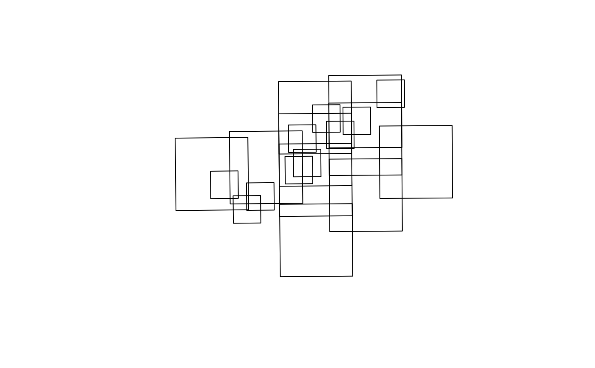

Estimate photo footprint polygons from centroids and scale
Source:R/fly_footprint.R
fly_footprint.RdCreates rectangular polygons representing the estimated ground coverage of each airphoto, based on film negative dimensions and the reported scale.
Details
Ground coverage is computed as negative_size * scale_number * 0.0254 metres
per side. Rectangles are constructed in BC Albers (EPSG:3005) for accurate
metric distances, then transformed back to the input CRS.
Examples
centroids <- sf::st_read(system.file("testdata/photo_centroids.gpkg", package = "fly"))
#> Reading layer `photo_centroids' from data source
#> `/home/runner/work/_temp/Library/fly/testdata/photo_centroids.gpkg'
#> using driver `GPKG'
#> Simple feature collection with 20 features and 9 fields
#> Geometry type: POINT
#> Dimension: XY
#> Bounding box: xmin: -126.7631 ymin: 54.34512 xmax: -126.449 ymax: 54.47635
#> Geodetic CRS: WGS 84
footprints <- fly_footprint(centroids)
plot(sf::st_geometry(footprints))
